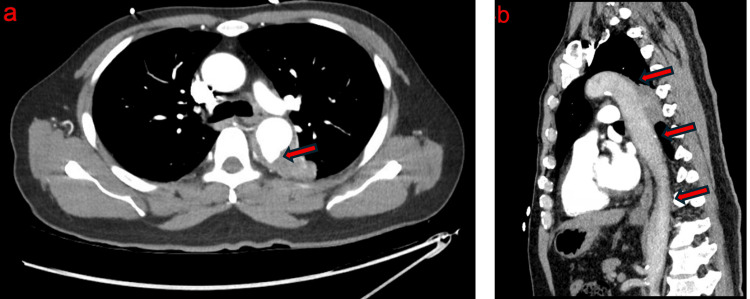

Ficha del catálogo
Úlcera aterosclerótica penetrante de la aorta
- Sistema
- Cardiovascular
- Modalidad
- TC
- Región
- Tórax y abdomen
- Dificultad
- Avanzado
Consiste en una placa de ateroma que se ulcera y rompe la lámina elástica interna, de modo que la sangre penetra hacia la capa media. Forma parte del síndrome aórtico agudo junto con la disección y el hematoma intramural. Aparece sobre todo en pacientes de edad avanzada con aterosclerosis extensa e hipertensión, con predominio en la aorta torácica descendente.
Técnica
La angiotomografía con serie sin contraste previa permite diferenciar la úlcera del hematoma intramural que suele acompañarla. Es necesario revisar planos sagitales oblicuos, porque una saculación pequeña puede pasar inadvertida en los cortes axiales. La comparación con estudios anteriores ayuda a definir si la lesión es evolutiva o estable.
Qué observar
- Saculación de contraste que sobrepasa la línea de las calcificaciones intimales
- Cuello de la lesión y profundidad de la penetración en la pared
- Hematoma intramural asociado en el segmento vecino
- Aterosclerosis difusa y calcificación extensa del resto de la aorta
- Signos de rotura contenida, hematoma periaórtico o derrame pleural
- Cambios de tamaño respecto a estudios previos
Hallazgos
Se observa una imagen de adición con forma de cráter que se proyecta desde la luz hacia la pared, con bordes irregulares y sobre un lecho de ateromatosis avanzada. Con frecuencia se asocia engrosamiento parietal hiperdenso adyacente que corresponde a hematoma intramural. La progresión se manifiesta como aumento de la profundidad, aparición de pseudoaneurisma o extravasación de contraste.
Perlas
La distinción práctica con la ulceración simple de una placa se basa en la profundidad y en el contexto, ya que la úlcera penetrante atraviesa la íntima y se acompaña de hematoma en la media o de dolor agudo, mientras que las erosiones superficiales del ateroma son hallazgos crónicos y silentes.
Diagnóstico diferencial
- Ulceración superficial de placa ateromatosa
- Es poco profunda, no supera la línea de calcificaciones y no se asocia a hematoma parietal ni a dolor agudo.
- Aneurisma sacular
- Tiene boca amplia, pared propia y crecimiento progresivo, sin el aspecto de cráter sobre placa.
- Disección localizada
- Presenta un colgajo intimal identificable que separa dos luces con realce.
- Pseudoaneurisma infeccioso
- Muestra contorno lobulado, cambios inflamatorios periaórticos marcados y evolución rápida con fiebre.
Simuladores
- Nicho entre calcificaciones prominentes en una aorta muy ateromatosa
- Divertículo del conducto arterioso en el istmo
- Artefacto de movimiento respiratorio que deforma el contorno aórtico
Por modalidad
- TC
- Define la morfología del cráter, su profundidad y el hematoma acompañante con resolución espacial alta.
- RM
- Puede utilizarse en el seguimiento cuando se busca evitar radiación y contraste yodado repetido.
Protocolo
Serie sin contraste seguida de angiotomografía con cortes finos y reconstrucciones sagitales oblicuas paralelas al eje aórtico. La proyección de intensidad máxima ayuda a mostrar la saculación en su eje mayor. En el seguimiento se mide la profundidad y el diámetro de la boca con la misma referencia anatómica.
Clasificación
Se encuadra dentro del síndrome aórtico agudo y se localiza según el segmento aórtico, con mayor frecuencia en la aorta torácica descendente. Se consideran indicadores de riesgo el dolor persistente, la profundidad creciente, el diámetro grande de la boca y la asociación con hematoma intramural o derrame pleural.
Errores frecuentes
- Confundir un nicho entre calcificaciones con una úlcera verdadera
- No revisar planos sagitales y pasar por alto lesiones pequeñas
- Informar la úlcera sin describir el hematoma intramural asociado

úlcera penetrante síndrome aórtico agudo aterosclerosis aorta descendente hematoma intramural tomografía urgencia vascular